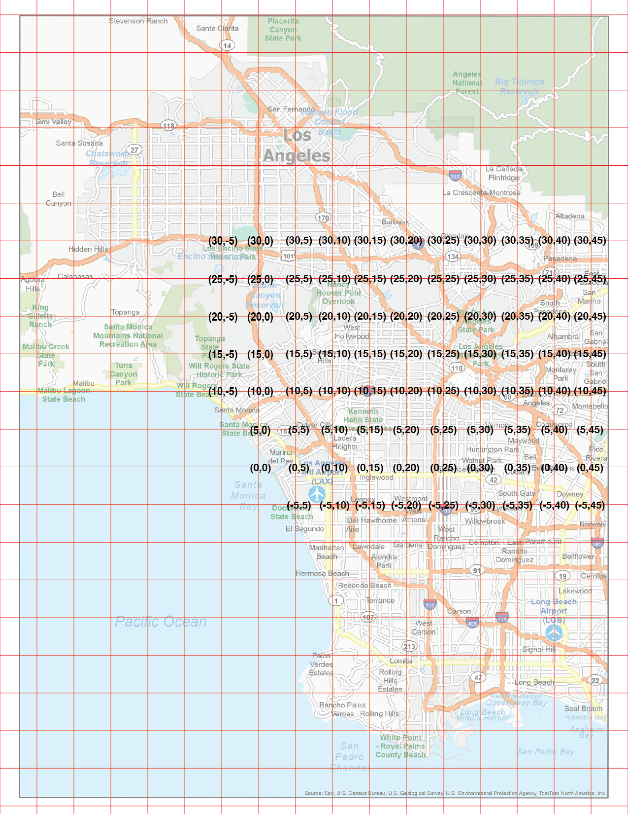
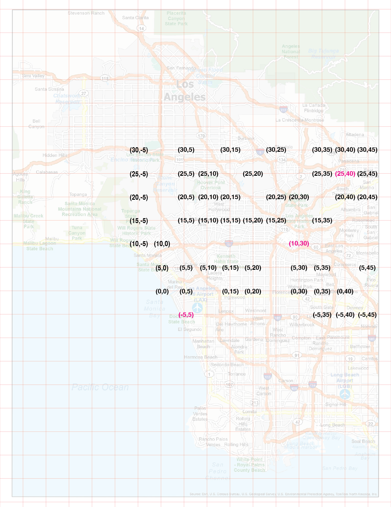
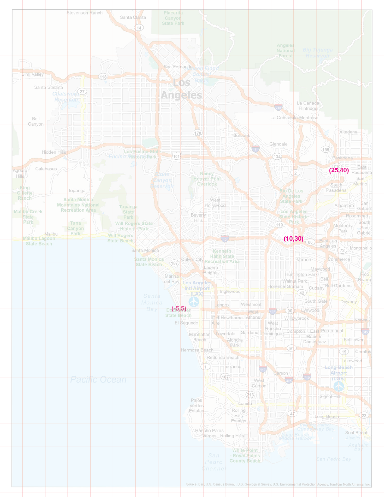
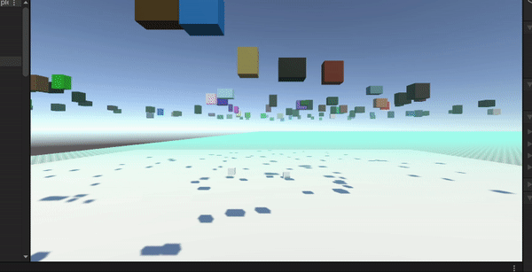
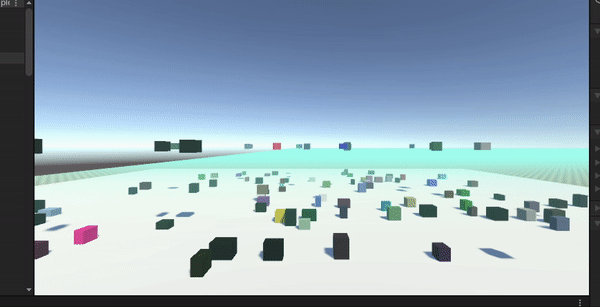
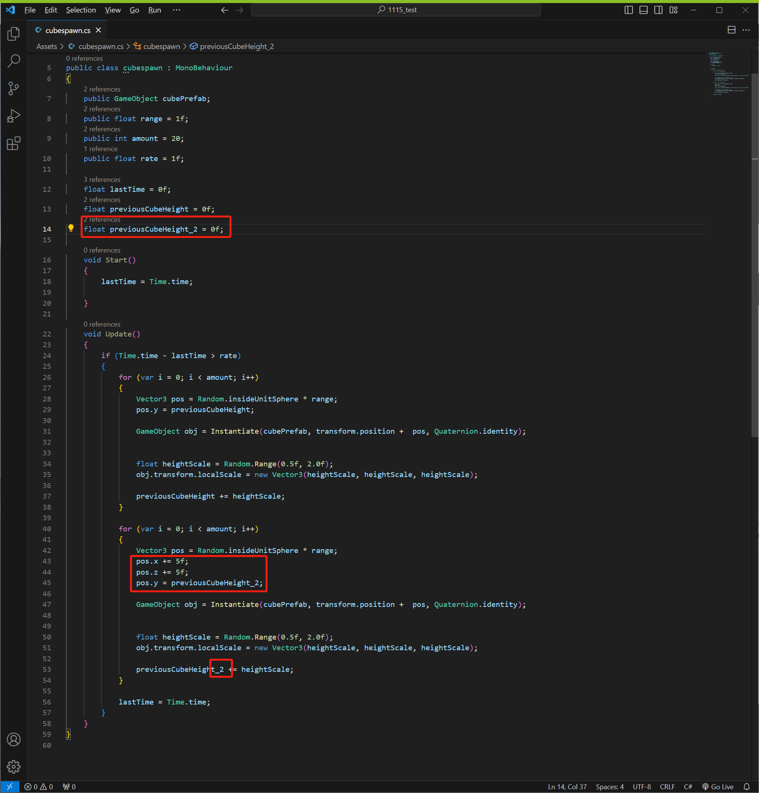
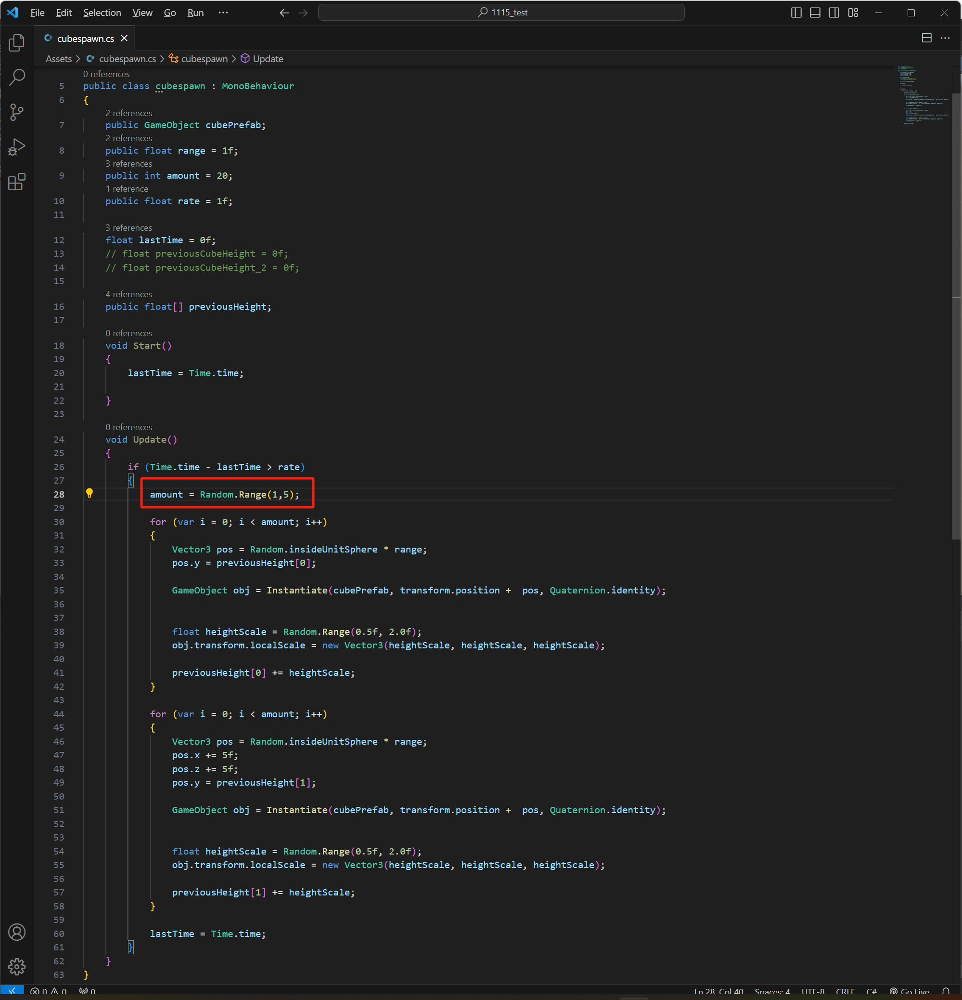
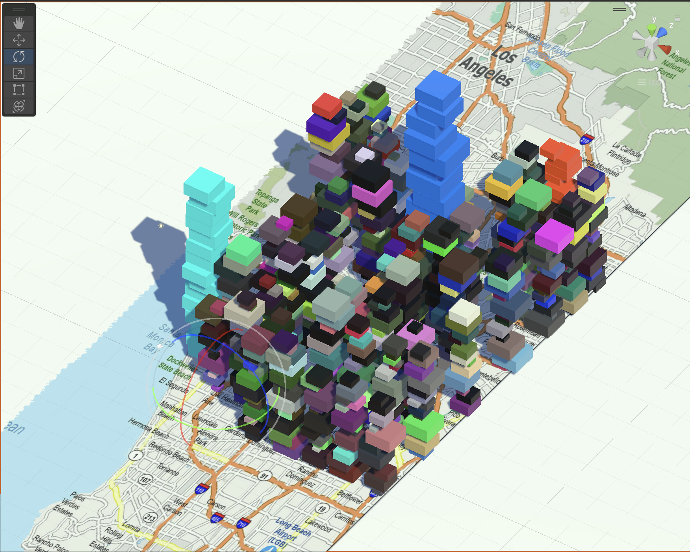
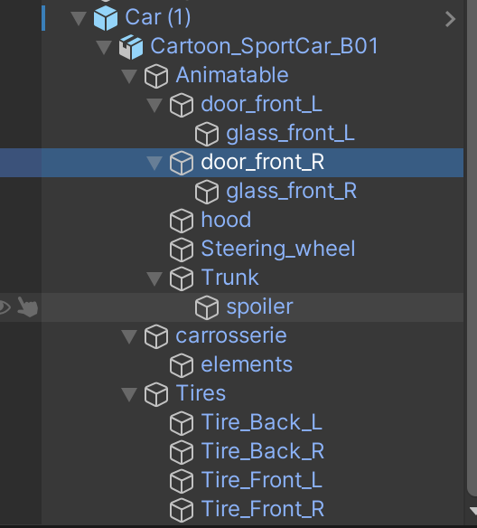
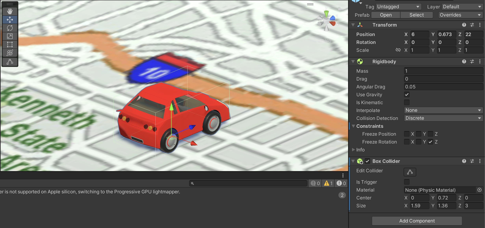

To generate LA, first of all, decide the area and need the locations.
  I needed to generate the cubes as a representation of building growth, but it was supported without Rigidbody to stack them up in a stable way.
 But the cubes are appealing in the air, so I needed to place them on top of cubes when these are generated.
Also, to add some variety of scales, make some range of scales of the cube from 1 to 5.
I needed to generate more than 10 buildings by the mapping, so I added the function to count them from 0 to whatever I want.

On the specific location for LAX, DTLA, and ArtCenter 950 buildings, fix the colors (mint, blue, and orange) to recognize them.
Add cars also generated to show the complexity of LA. So, downloaded from free prefab for a car model and imported the file to Unity. It contains a lot of individual features on the car.
Not able to add Rigidbody/collider to cars maybe because of the complexity of prefab, so manually add a box collider around the car.
